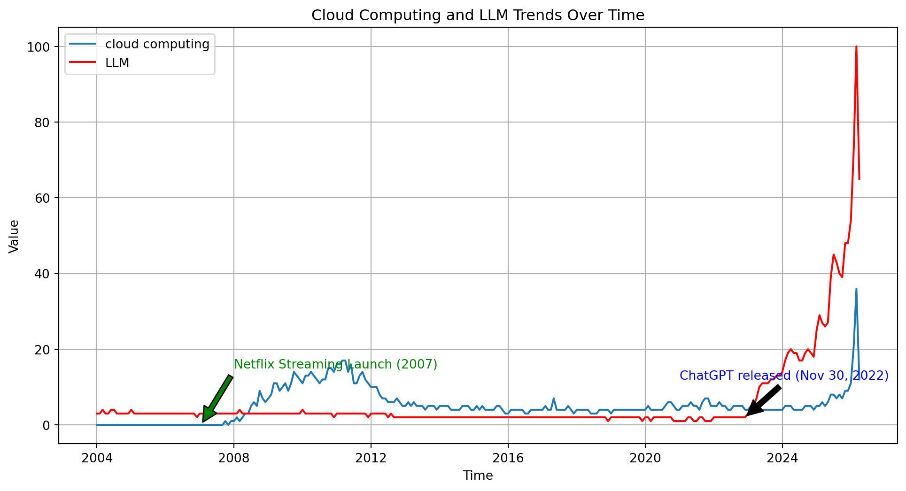

Cloud
AI 101
Today
- Thus far we have:
- Developed text generation from scratch.
- Now we will:
- Survey, at a high level, how to do this at scale.
Motivation
Citation
- Today’s lecture is adapted from an earlier course on Cloud Computing.
- The materials, which are showing age, are here
- It is worth noting I proposed that course (under that name) prior to the release of ChatGPT
- That is, I have now pivoted to “AI 101” for a reason.
- Vs. AI, I actually am a domain expert in “cloud”.
My Work
Thesis Title
- Mining Secure Behavior of Hardware Designs
In Plain English
- Just as there are bugs in code that makes software, modern hardware is also written in code and therefore may contain bugs. I find these bugs.
The text
Specification mining can discover properties that can be used to verify the secure behavior of closed source CISC CPU designs, properties that can be used to verify the temporal correctness of CPU designs, and hyperproperties that can be used to verify that modules, SoCs, and CPUs have secure information flow.
Relevant Excerpt
When parallelizing all trace generation and all case mining, Isadora could theoretically evaluate the Single ACW case fully in less than five minutes. Parallelizing the first phase requires a Radix-S and QuestaSim instance for each source register, and each trace is generated in approximately 100 seconds. Further, the trace generation time is dominated by write-to-disk, and performance engineering techniques could likely reduce it significantly, such as by changing trace encoding or piping directly to later phases. Parallelizing the second phase requires only a Python instance for each source register, and takes between 1 and 2 seconds per trace. Parallelizing the third phase requires a Daikon instance for each flow case, usually roughly the same number as unique sources, and takes between 10 and 30 seconds per flow case. The final phase, postprocessing, is also suitable for parallelization. Maximally parallelized, this gives a design-to-specification time of under four minutes for the single ACW and for similarly sized designs, including PicoRV32.
In brief
Plain text
- Rather than do 100s of things for 3 minutes to take 100s of minutes, we can use 100s of computers for 3 minutes and always be done in 3 minutes.
Parallelism
- This:
- “Rather than do 100s of things for 3 minutes to take 100s of minutes, we can use 100s of computers for 3 minutes and always be done in 3 minutes.”
- Is the core insight of cloud computing
- And the core enabling technology for the “large” in “large language models” (LLMs).
- The technology is from 2017 and there wasn’t enough computing power until 2022.
Changes since 2023
Note - Data Source
- I got this interest level from Google Trends
- I retrieved the data 23 Apr 26, it is usually in at least a little bit of flux.
Note - 2007
- I made a note in 2007 as I think it was the launch of prominent cloud computing.
- Hard to track the technology versus the term, but Netflix (remember them?) started getting headlines around then.
- Source - Wikipedia
- Source - NYT
Note - 2022
- I really don’t think ChatGPT broke out until 2023, under a single digit percentage of people were using in 2022.
- Release was late 2022, around November.
- Source - Wikipedia
- Source - ChatGPT
Note - Between
- The real buzzword technology between 2007 and 2022 was I think bitcoin.
- CS-271: Taught in fall. Requires one year of programming.
- Then for a while NFTs, also didn’t really persist.
- Not really intelligence relevant.
Onward!
- And now, my introduction to cloud computing.
- Recall the “Philosophy Tube Thesis”
In her book Atlas of AI researcher Kate Crawford uses a different term: large-scale computing.
The Cloud
Core insight
- Instead of solving hard problems, we use more computers
- Computers are cheap, and people that can use them well are expensive (to train and hire)
- In my experience: your boss/manager/accountability group always wants you to spend $0.12 to use the 1000s of the fastest computers on earth for 5 seconds, rather than 6 months writing “better” code.
- Writing fast code is hard, and spending $0.12 is easy.
Pre-LLM Trillion $ Co.’s
| Company | $1 trillion | $2 trillion | $3 trillion | Nominal |
|---|---|---|---|---|
| Microsoft | 25 Apr 19 | 22 Jun 21 | 24 Jan 24 | 3,185 |
| Apple | 2 Aug 18 | 19 Aug 20 | 3 Jan 22 | 3,081 |
| Saudi Aramco | 11 Dec 19 | 12 Dec 19 | — | 2,463 |
| Nvidia | 30 May 23 | 23 Feb 24 | — | 2,380 |
| Alphabet | 16 Jan 20 | 8 Nov 21 | — | 2,150 |
| Amazon | 4 Sep 18 | — | — | 1,970 |
| Meta | 28 Jun 21 | — | — | 1,220 |
| Tesla | 25 Oct 21 | — | — | 1,210 |
| PetroChina | 5 Nov 07 | — | — | 1,200 |
Basically
- Three of the six largest companies in the world are cloud companies
- Of the others, Nvidia is a primary supplier, and Apple and Meta are primary consumers.
- The world economy is 2/3 cloud and 1/3 transit.
More extreme today
- Check the latest.
- Market capitalization
Why “The Cloud”?
- Computing happens somewhere else, not on your PC or mobile device
- The Cloud Underpins “Modern” Computing
- Physical: The cloud is a global deployment of massive data centers connected by ultra-fast networking, designed for scalability and robustness.
- Logical: A collection of tools and platforms that scale amazingly well.
- Conceptual: A set of scalable ideas, concepts, and design strategies.
From whence?
- My view: it emerged naturally from high quality systems programming.
- As computer chips got faster, they hit a “heat wall” where they couldn’t speed up without melting.
- To get past the heatwall, Intel et al. placed multiple processing units on a single chip (e.g. Phone/Tablet/PC).
- To use multiply processing units, sometimes n pieces of code had to run at the same time.
- If n can be 8 (my phone) why not \(10^6\) (my phone’s app’s datacenters)
“The Heat Wall”

Or?
- Another view: It emerged naturally from the Internet
- The internet runs over networks between multiple computers with different computing and data capabilities.
- If I can ask Google for directions, why can’t I ask Google to compute a mean
- If Google can ask me for a password, why can’t it ask me for a .csv
- If computing is already distributed across local and remote servers, why not write code for this paradigm.
- The internet runs over networks between multiple computers with different computing and data capabilities.
Visually
- This is what we should image an “AI” looks like.
- But also what a website looks like.
- But also what a text message looks like.

Core insight
- My view: It DID NOT emerge from “classical” software engineering
- “Object oriented languages” e.g. Java won the software engineering wars of the 00s.
- I am a hater.
- I believe MapReduce, two functions, unseated Objects as the dominate paradigm over time
- “Object oriented languages” e.g. Java won the software engineering wars of the 00s.
MapReduce for us
- We have implicitly used “MapReduce”
- “Map” means “do X to all things in Y”
- Like how a map represents all landmarks in an area.
- “Reduce” means “add up all things in Y”
- “Map” means “do X to all things in Y”
- Remember this
Map
- Take every row, multiply it by every column
Reduce
- Compare the summed up result to a single value.
How big?
It is generally regarded that…
- Google is one of the largest data aggregators
- Google held approximately 15 exabytes in 2013 [src]
- Google’s reported power use increased 21%/anum from 2011->2019
Forbes

Math it
How fast?
- 200x every ~10 years within one company, but # of data companies also grows.
- Approximately doubles per decade, looks like.
- I generated 134 MB of teaching materials in 3 years full time, or .0000000000134 exabytes
Client/Server
- I like to think of the cloud as a dancer between users/clients and remote servers
- We use devices which are physical and live “outside” the cloud, but are ~useless on their own.
- Your phone does some things, remote email servers do some things.
Imagine:
- Usually:
- Website lives in cloud storage, is sent as a chunk of data to phone/pc.
- Website runs locally in phone/pc browser
- Website asked something it doesn’t know (current weather, directions to nearest oatmilk mocha)
- Website asks cloud to compute something
- Cloud server gets a request, sends back to phone/pc which updates what you see.
Visually

Evolution?
- Prior to ~2005, we had “data centers designed for high availability”.
- Amazon had especially large ones, to serve its web requests
- This is all before the AWS cloud model
- The real goal was just to support online shopping
- Their system wasn’t very reliable, and the core problem was scaling
Throwback

Yahoo! Experiment
- In the 2005 time period everyone was talking about an experiment done at Yahoo. It was an “alpha/beta” experiment about ad-click-through
- Customers who saw web page rendering faster than 100ms clicked ads.
- For every 100ms delay, click-through rates noticeably dropped.
Throwback

100 MS
How long is 100 ms?
The World Changed
- At Amazon, Jeff Bezos spread the word internally.
- He wanted Amazon to win this sprint.
- The whole company was told to focus on ensuring that every Amazon product page would render with minimal delay.
- Unfortunately… as more and more customers turned up… Amazon’s web pages slowed down. *
This is a “crisis of the commons” situation.
By the way
- This is what Bezos looked like in 2005.

The Commons
- At the center of the village is a lovely grassy commons. Everyone uses it.
- One day a farmworker has an awesome idea. They lets their goats graze on the commons. This saves a lot of rent dollars paid as part of a tenant farmer agreement.
- They earns extra money with award-winning goats.

This is the plot of King Richard (2021)
Cloud Commons?
- In the cloud we need to think about all the internal databases and services “shared” by lots and lots users.
- But what works best for one instance, all by itself, might overload the shared services when the same code runs side by side with huge numbers of other instances (“when we run at scale”)
Shorter: doing n things at once is hard.
The Thundering Herd
- In fact this is a very common pattern.
- Something becomes successful at small scale, so everyone wants to try it.
- But now the same code patterns that worked at small scale might break.
- The key to scalability in a cloud is to use the cloud platform in a smart way.
The Horror!

Prediction
- Amazon reorganized their whole approach:
- They began to guess (!!!) at your next action and precompute what they would probably need to answer your next query or link click.
Wait… isn’t that… next token prediction?
The Ouroboros

Fast-forward
- Today, the cloud optimizes itself
- Exascale servers… serve various applications.
- Food order/delivery
- Online shopping
- Video streaming
- Messaging
- Exascale servers… serve various applications.
- At each stage, LLMs and LLM like tools “work ahead” to try to make things seem faster than they could possibly be.
The Result
- My instagram infinity scroll “for you” page contains incredibly precisely targetted ads…
- Which lead to more online shopping or food order/delivery
- The wheel turns
- My online shopping experience recommends things I am highly likely to need.
- Leading to me posting about them on instagram.
- My YouTube feed etc. etc.
Looking Ahead
- Okay but wait.
- Where does all that thinking take place?
- To be continued with the course final: Perspectives